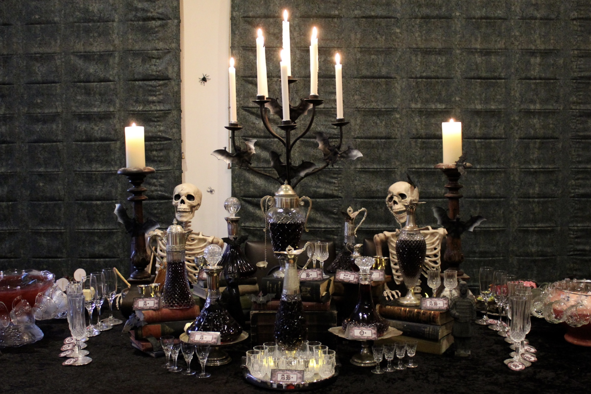
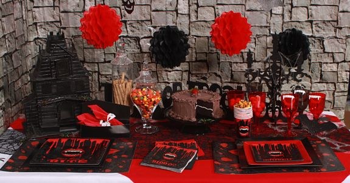

The main colors are deep red, black, dark purple, silver and gold. Use heavy fabrics (velvet, brocade), leather, dark wood, wrought iron elements. Candles (possibly LED for safety), floor lamps with shades, vintage-style sconces will create a mysterious atmosphere.
Antique books, portraits in massive frames, tapestries, candelabra, artificial cobwebs, mirrors in intricate frames. Classical music, gothic rock, ambient compositions will create the appropriate mood. Waiters can be dressed in stylized Renaissance costumes or gothic outfits. Perhaps even use vampire pseudonyms.
Vampire movie nights, Gothic literature readings, costume parties. Create a photo zone with vampire props (cloaks, fangs, antique furniture). Sale of souvenirs with the cafe logo and vampire symbols (cups, T-shirts, key chains). Exhibition of works by artists and photographers in the Gothic style.